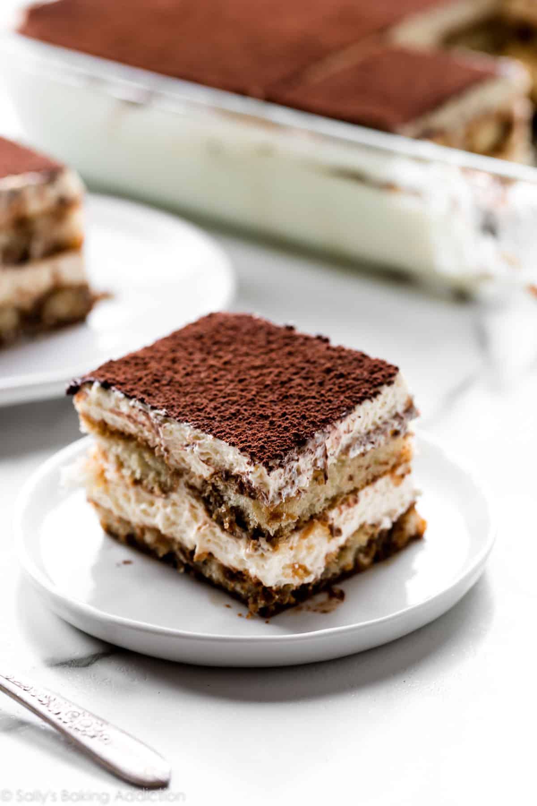

Tiramisu

Tiramisu is a timeless no-bake Italian dessert combining
espresso-dipped ladyfingers and a creamy lightly sweetened mascarpone cream.
This recipe is from the late Maida Heatter and is easily the best homemade
tiramisu recipe
For those not familiar, Maida Heatter is an icon, especially in the baking world.
Dubbed the Queen of Cake, her expansive culinary career included 9
cookbooks, recipes for the Times, a restaurant, and three James Beard Awards.
Baker and author Dorie Greenspan once said “Whenever someone tells me they want to
learn to bake, I tell them to start with Maida Heatter’s books. That’s what I did.”
This latest cookbook is a testament to Maida’s legacy. She leaves behind an incalculable
amount of inspiration to bakers and cooks all over the world.
Ingredients
- Espresso
- Grand Marnier
- Ladyfingers
- Mascarpone cheese
- Dark rum
- Eggs
- Granulated sugar
- Heavy cream
- Pure vanilla extract
- Cocoa powder
Steps
- Whisk espresso and Grand Marnier.
- Dip half of the ladyfingers in the espresso mixture.
- Line dipped ladyfingers in bottom of pan.
- Beat mascarpone and rum together.
- Gently cook egg yolks and sugar.
- Beat egg yolks into mascarpone cream mixture.
- Whip heavy cream and vanilla extract into medium peaks.
- Fold whipped cream into mascarpone cream mixture.
-
Beat the egg whites and salt together until foamy, then slowly pour in sugar and beat
until stiff peaks form.
- Fold egg white mixture into mascarpone cream mixture.
- Layer half of the cream mixture on top of the ladyfingers.
- Dip and layer remaining ladyfingers.
- Top with remaining cream mixture, then chill for for 2-3 hours.
- Dust with cocoa and chill overnight.